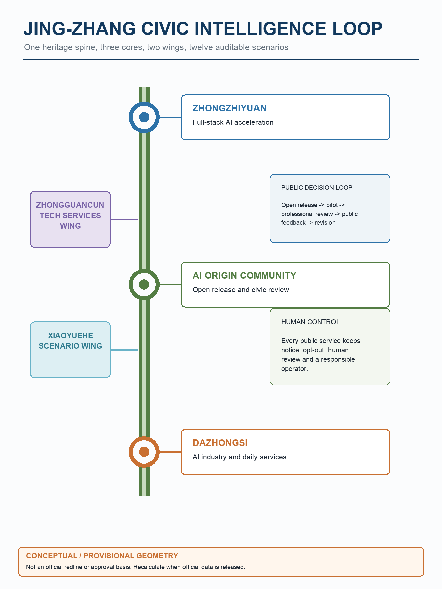
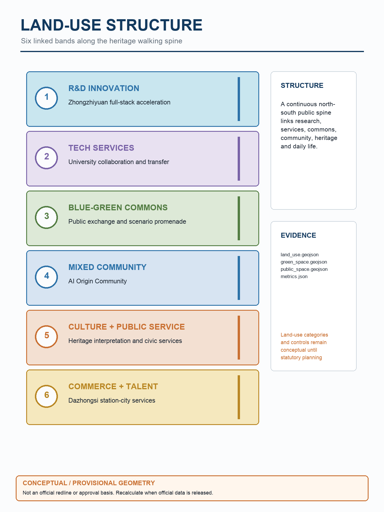
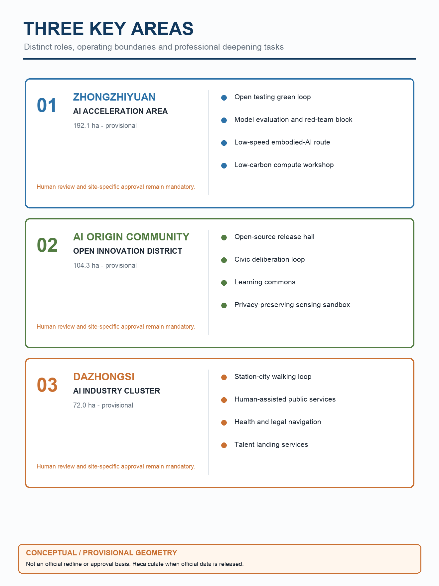
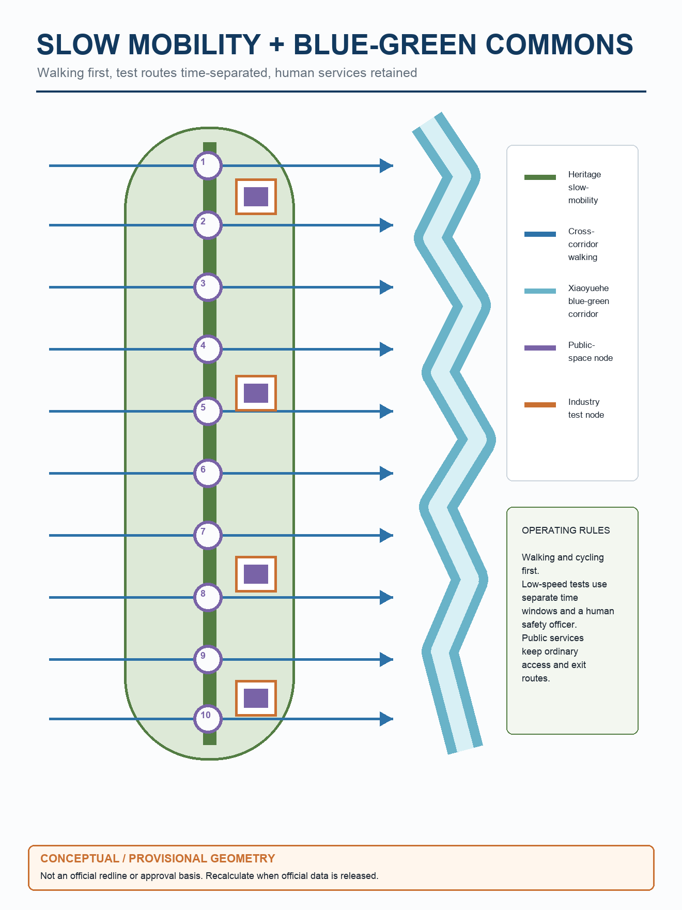
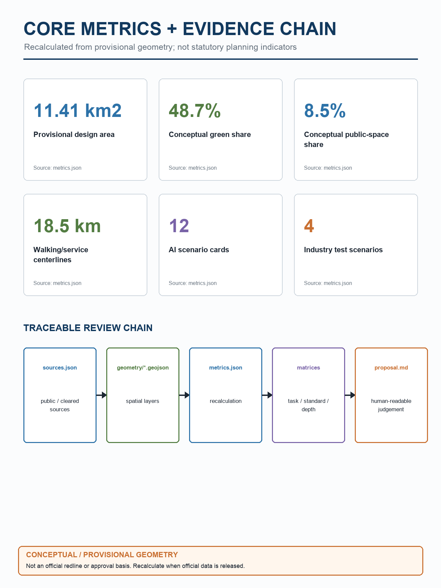

One belt, three cores, two wings, and twelve AI scenarios. Provisional geometry only; not an official redline.
Heritage AI corridorUrban AI lifeAI innovation belt




Traffic walkability, enterprise services, low-speed robot delivery, health-service navigation, cultural guide, and public-safety operations review are mapped to spatial nodes with human-review boundaries.
See sources.json and assumptions.json. Official GIS/CAD boundaries, statutory controls, ownership and surveyed engineering data remain missing.